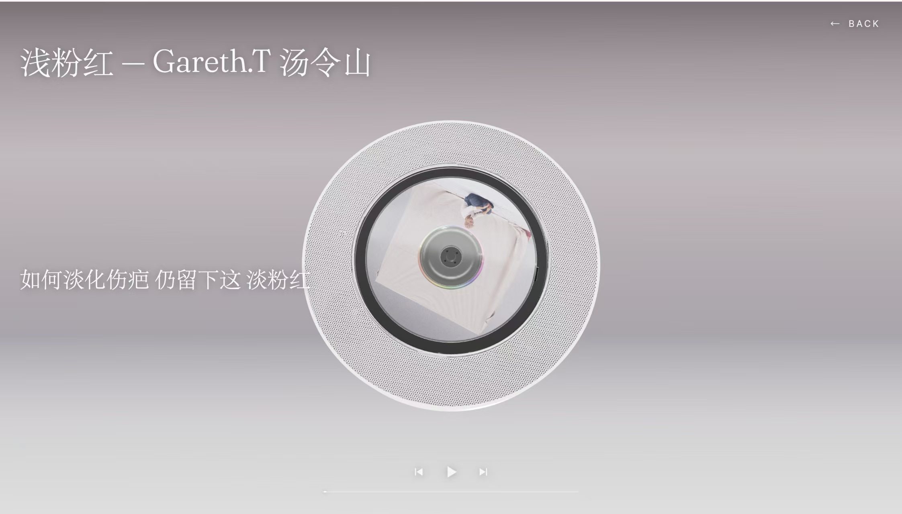
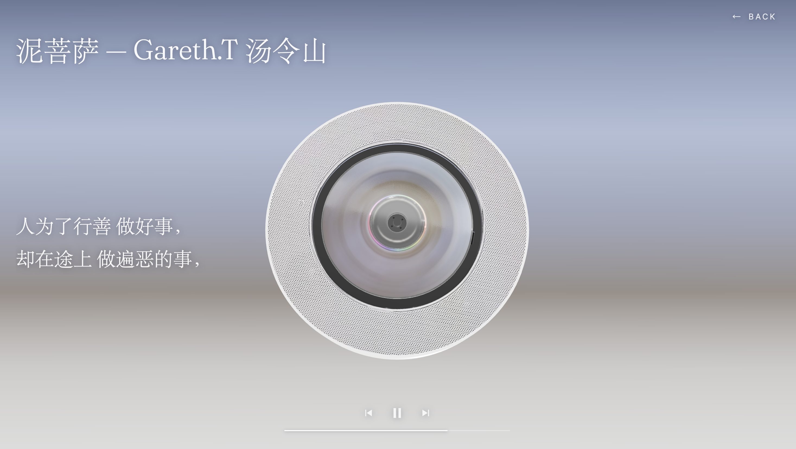

DICS Records · 3D 唱片墙 + 唱机
将 12 张专辑组织为可交互的 3D 唱片墙，支持播放、歌词展示与自制 CD 上传。



背景
主流流媒体以列表形式呈现音乐，缺少实体唱片"取出、放入唱机"的仪式感。本项目旨在构建一个可交互的 3D 唱片墙，在静态展示专辑封面之外，支持将碟片放入唱机、播放音频、展示歌词，并支持用户上传自制 CD 加入队列。
功能
- 3D 弧形旋转木马浏览专辑
- 点击中心碟片进入唱机模式，播放音频并显示歌词金句
- 自制 CD 上传，IndexedDB 持久化，刷新后重建
- 通过 iTunes 搜索自动获取封面与音频
- 提取封面主色驱动唱机背景渐变
关键决策
- 封面不直接映射 GLB 的 UV（展开混乱），改以 RingGeometry 环形印刷层叠加于碟片顶面。
- 唱机高速旋转的视觉效果通过贴图模糊实现，60fps 下真实超高转速只会产生频闪。
- 自制 CD 存储于 IndexedDB，刷新后重建；封面主色用于驱动主题色。
- 自制 CD 通过 iTunes 搜索自动获取封面与音频，浏览器内直调，检索失败时回退至手动上传。
技术
Three.js + GSAP + Lenis，GLB 碟片叠 RingGeometry 印刷层。
复盘
部署过程中遇到国内静态托管需备案的问题，最终采用自建香港轻量服务器；旧浏览器上 WebGL 全屏画布需禁用混合模式与 backdrop-filter，否则导航栏不可见。
← 返回总览